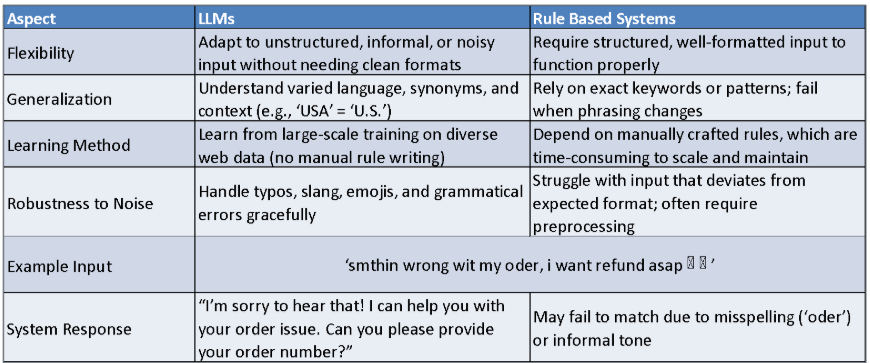
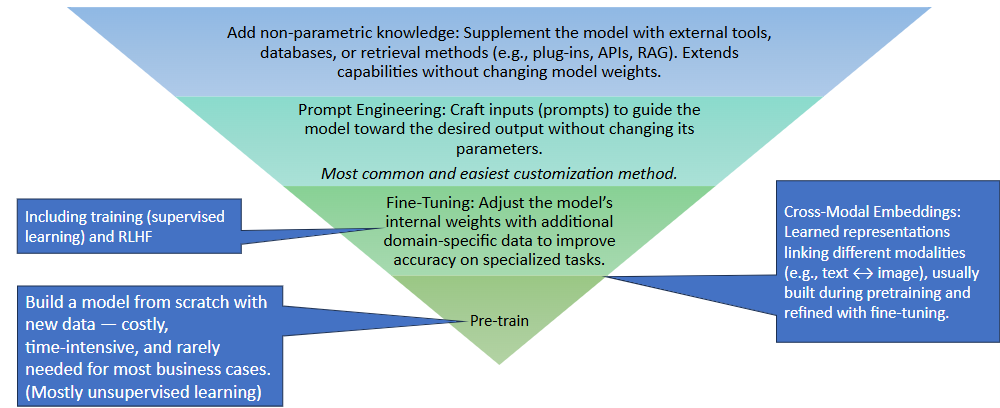
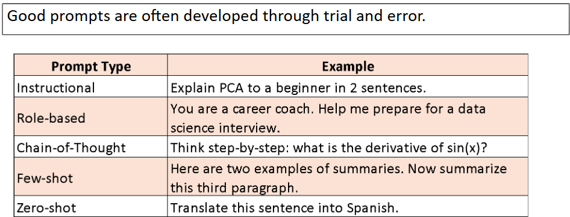
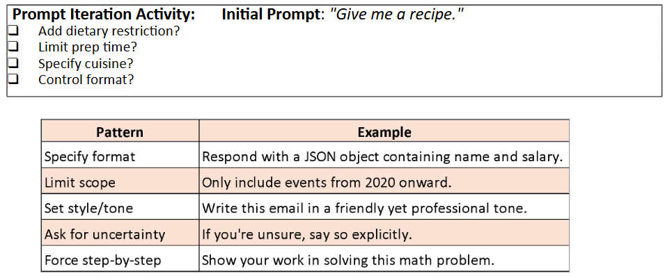
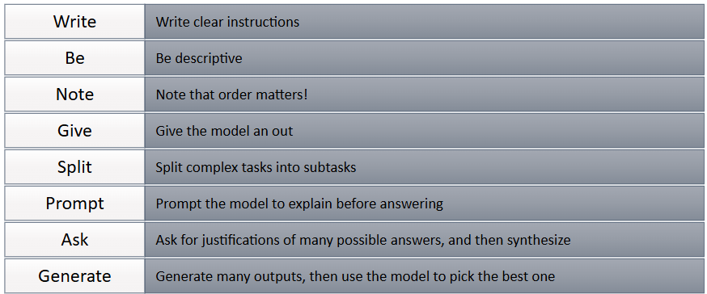
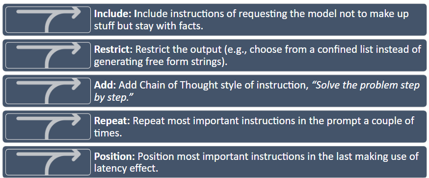
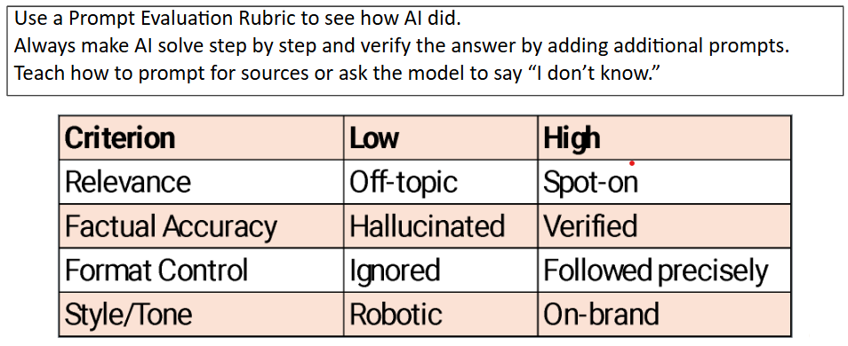

Understanding Generative AI
This section introduces multimodal generative AI — systems that create and reason across text, images, audio, and video — and situates them within the broader evolution from language models (LMs) to large language models (LLMs) and multimodal LLMs (MLLMs). It explains how advances in transformer architectures, GPUs, and training methods (pretraining, fine-tuning, RLHF, and cross-modal embeddings) enable cross-modal understanding and generation, while prompt engineering turns these capabilities into reliable workflows. The section also surveys high-impact applications (automation, personalization, retrieval, and decision support), highlights key risks (hallucination, bias, and transparency), and outlines practical guardrails — evaluation rubrics, prompt engineering, and governance — for responsible deployment.
Reference:
Chapters 1 and 3 of Multimodal Generative AI present an overview of the foundations, architectures, and ethical considerations of multimodal generative systems, and examine how emerging multimodal large language models extend these capabilities with advanced cross-modal reasoning and generation — while addressing challenges in complexity, data integration, and responsible deployment.
Generative AI
Generative AI refers to a category of AI that creates new content — text, audio, images, video, and code — based on patterns learned from training data. It contrasts with predictive AI, which forecasts outcomes from historical data without creating new content.
| Type | Goal | Example |
|---|---|---|
| Generative AI | Create new content | ChatGPT, DALL·E, Copilot |
| Predictive AI | Forecast outcomes | Churn models, demand forecasts |
Notable generative AI tools include ChatGPT (conversational text generation), Codex and GitHub Copilot (code generation and completion), DALL·E (image generation from text prompts), and Perplexity AI (conversational search combined with generative synthesis).
From Language Models to Large Language Models
Generative AI is the broad field encompassing AI systems that create new content across modalities. Within that field, language models (LMs) are a core branch focused on predicting and generating text. An LM estimates the likelihood of words or phrases in a sequence, enabling it to generate text, complete sentences, and suggest ideas based on context. For example, given the prompt “The stock market is…,” a language model predicts plausible continuations.
A large language model (LLM) is a scaled-up language model trained on massive datasets with billions of parameters. This scale enables advanced capabilities in reasoning, summarization, translation, and dialogue. LLMs — such as GPT-3 and GPT-4 — use deep learning, particularly transformer architectures, to understand complex patterns across large text corpora and generate human-like responses across a wide variety of tasks.
The jump from LM to LLM is not just a size increase — it is a capability threshold. Researchers have observed that certain abilities (multi-step reasoning, in-context learning) only emerge reliably above a certain parameter count, a phenomenon called emergent behavior.
Multimodal Large Language Models (MLLMs)
A Multimodal Large Language Model (MLLM) is a specialized LLM that can process and produce more than just text — it works across images, audio, and video as well. MLLMs are capable of tasks like describing images, interpreting memes, or generating website code from a visual mockup.
These emergent capabilities are rarely seen in conventional single-modality models and are widely viewed as steps toward Artificial General Intelligence (AGI) — the hypothetical point at which an AI system can perform any intellectual task a human can. Researchers across academia and industry are rapidly developing MLLMs that aim to match or surpass models like GPT-4V.
Why It Matters Now
The recent explosion of LLMs and MLLMs — including GPT-4, Gemini, and Claude — reflects a convergence of content generation and automated decision-making across business, healthcare, security, and creative work. AI carries transformational potential: it automates workflows and enhances productivity at scale. At the same time, it introduces new risks around bias, explainability, and control that organizations must actively manage.
AI Evolution
The history of AI stretches from Pascal’s mechanical calculator (1642) and Ada Lovelace’s foundational work on analytical engines (1837) to the modern era. These early inventions established the basis for automated computation and logic. Progress accelerated through neural networks, statistical machine learning, and deep learning — each step enabled by advances in hardware, particularly GPUs, which made training large, complex models feasible.
Today, generative AI breakthroughs — including GPT-4, DALL·E 2, and GitHub Copilot — have redefined content creation and automation, with applications spanning IT helpdesks, creative arts, medical guidance, and beyond. The economic stakes are significant: generative AI is projected to increase global GDP by 7% while potentially displacing up to 300 million knowledge worker roles.
How Generative AI Works
Game Theory and Generative Adversarial Networks
Game theory inspires generative AI by modeling competition, cooperation, and strategic decision-making — core elements in adversarial training, multi-agent learning, and safe interactive AI design.
The clearest example is the Generative Adversarial Network (GAN), in which two neural networks compete:
- The generator tries to create realistic synthetic data (e.g., a fake photograph).
- The discriminator tries to distinguish that synthetic data from real examples.
This mirrors a non-cooperative game in which both players improve iteratively through feedback. Equilibrium is reached when the generator fools the discriminator perfectly — at which point the synthetic output is indistinguishable from real data.
The Data-Driven Workflow
Generative AI development follows a data-driven pipeline. The process begins with diverse datasets — text, images, audio, and more — from which the model iteratively learns patterns during training. Fine-tuning then adapts the pretrained foundation model to a specific task or domain using additional labeled data, improving relevance and reliability for industry-specific applications.
After training and fine-tuning, the model enters inference — the stage at which it generates outputs (such as answering a question or completing a sentence) in response to new inputs. These outputs can power applications, APIs, and digital platforms.
Early AI and the Rise of Chatbots
The earliest chatbots (1960s) were rule-based systems relying on predefined keyword responses from expert knowledge bases — ELIZA being the canonical example. These systems were neither scalable nor flexible, failing in open-ended or dynamic conversations.
The rise of statistical AI in the 1990s introduced machine learning for pattern recognition from labeled text, enabling more adaptive and context-aware text classification. Neural network breakthroughs in the 2010s — particularly deep learning and Recurrent Neural Networks (RNNs) — significantly enhanced language understanding and contextual awareness at the sentence level.
The pivotal shift came around 2017 with the introduction of the transformer architecture: a neural network design that processes sequences using attention mechanisms, enabling context-aware and parallelized language generation. Two foundational concepts underpin transformers:
- Tokenization — the process of breaking text into tokens (subwords or characters) that serve as inputs for the model. For example, the word “unbelievable” might be split into
["un", "believ", "able"]. - Attention mechanisms — allow the model to assign different weights to different parts of an input when generating outputs, focusing on the most relevant context regardless of position. This is what allows a model to understand that “bank” means something different in “river bank” vs. “savings bank.”
These advances powered tools like ChatGPT and Bing Chat (from 2020), capable of multi-turn conversations and creative output.
The Importance of GPU Innovation
A GPU (Graphics Processing Unit) is a specialized processor originally designed to accelerate image and video rendering. Unlike a CPU, which handles a wide variety of general tasks sequentially, a GPU is optimized for performing massive numbers of mathematical operations — especially vector and matrix calculations — in parallel.
This parallel processing capability is exactly what neural network training requires: at each training step, millions of floating-point operations must be performed across the model’s parameters simultaneously. GPUs make this tractable in hours rather than years.
GPU advancements have been central to the rise of LLMs like GPT-4, enabling faster training at lower cost. Efficient GPU-based architectures now allow even smaller models to run on mobile devices (such as Google’s PaLM 2). More broadly, cheaper and more powerful chips have democratized AI: a wider range of organizations — not just large technology companies — can now build, fine-tune, and deploy models, encouraging open-source participation and innovation at scale.
Open-Source Generative AI: GenOS
The Generative Open-Source Index (GenOS) is a comprehensive tracker that ranks and evaluates open-source generative AI projects across modalities and applications. It helps developers, researchers, and organizations discover, compare, and leverage leading open-source tools, encouraging transparency, collaboration, and accessibility in the GenAI ecosystem. Projects are evaluated on GitHub popularity (stars, forks, and issues), recency of updates, community contributions, and technical features.
GPUs alone do not create value — they require systems to organize, orchestrate, and scale AI capabilities across applications. A Generative AI Operating System (GenOS) provides exactly this: a layer that manages foundation models, prompt engineering, data pipelines, safety mechanisms, and deployment. If GPUs are the engines, GenOS is the driver’s dashboard — turning raw compute into usable, business-ready intelligence.
Training Methodologies for LLMs
Data Collection and Pretraining
Training begins with collecting massive, diverse, high-quality datasets from sources like web text, books, code, and forums. The model then undergoes pretraining via unsupervised learning — using objectives such as next-word prediction (causal language modeling, as in GPT) or masked word prediction (as in BERT) — to develop broad language understanding.
In masked word prediction, certain words are hidden and the model learns to recover them from context:
- Input: “The cat sat on the
[MASK].” - The model learns to predict: “mat”
This forces the model to develop deep contextual understanding rather than simply memorizing sequences.
Fine-Tuning (Supervised Training)
After pretraining on broad general data, fine-tuning specializes the model by training on smaller, labeled datasets aligned to specific tasks such as summarization, question answering, translation, or sentiment analysis.
Fine-tuning uses supervised learning — providing input–output pairs (e.g., an article paired with its summary) — and adjusts the pretrained model’s weights slightly rather than retraining from scratch. The key benefit: the model already understands language; fine-tuning teaches it to apply that understanding to a specific job.
Variants include:
- Full fine-tuning — all parameters are updated (expensive but thorough).
- Parameter-efficient fine-tuning (e.g., LoRA or adapters) — only a small fraction of parameters change (faster and cheaper; widely used in practice).
Reinforcement Learning with Human Feedback (RLHF)
RLHF is a specialized fine-tuning methodology applied after pretraining (and often after supervised fine-tuning). Human evaluators rate model outputs, rewarding helpful, safe, and aligned responses while discouraging toxic, incoherent, or misleading ones. This feedback loop shapes the model to be more aligned with human values and conversational needs — not merely good at predicting the next token.
RLHF is the technique behind assistant models like GPT-3.5-turbo and ChatGPT. Without RLHF, a base model trained only on internet text would also learn to reproduce harmful, biased, or incoherent content at the same rate it appeared in training data.
Cross-Modal Embeddings
Cross-modal embeddings are representations in a shared vector space that connect different modalities — text, images, audio, and video — by their semantic meaning. An image of a dog and the word “dog” are mapped close to each other in this space, even though one is pixels and the other is text.
This enables powerful applications:
- Search for images using text queries (“golden retriever playing frisbee”).
- Generate captions from images automatically.
- Cross-lingual video search (find a video in English using a French query).
- Multimodal reasoning (answer questions about an image using natural language).
LLMs vs. Rule-Based Systems
A key question in deploying LLMs is how they handle unstructured, messy web data differently than traditional rule-based systems.

Prompting and Prompt Engineering
For additional information, review the O’Reilly Video on Prompt Engineering: https://learning.oreilly.com/videos/prompt-engineering/9781835881521/9781835881521-video1_1/
RLHF vs. Prompt Engineering
RLHF and prompt engineering operate at different layers of the AI stack:
- RLHF is part of model training — it shapes how a model responds by making it more instruction-following and aligned with human intent. It happens before the model is deployed.
- Prompt engineering is how users leverage that alignment in real-world queries, after the model has already been trained.
Using a driving analogy: RLHF tunes the car’s steering system so it follows directions well; prompt engineering is how the driver actually steers with the wheel.

Prompt Engineering
Prompt engineering is the art and science of crafting inputs to elicit desired outputs from AI systems. A well-crafted prompt can function like a program for an LLM — guiding it to generate structured outputs, perform multi-step reasoning, or simulate a specific role.
The core principle is “garbage in, garbage out”: the quality of the prompt directly determines the reliability, tone, and relevance of the model’s response. A vague prompt produces a vague answer; a specific, well-structured prompt produces a specific, useful answer.
The Prompting Paradigm
The prompting paradigm refers to the method of adapting LLMs through natural language instructions rather than retraining. This is a fundamentally new way of programming:
- Base models (such as GPT-3 or LLaMA-2), pretrained on massive text corpora, can perform a wide variety of tasks from prompting alone — no fine-tuning required.
- Assistant models (such as ChatGPT or Claude) take this further: they are fine-tuned using RLHF, shaping the model to respond in a more conversational and task-specific way.
Better prompts consistently produce better outcomes across virtually every industry and use case.
In-Context Learning
Prompting is foundational to in-context learning, where the model draws on examples provided directly in the prompt to infer new tasks dynamically — without any additional training. Two key strategies build on this:
- Chain-of-thought prompting — encourages the model to generate step-by-step reasoning before arriving at a conclusion. Example: “Think through this step by step before answering: if a train travels at 60 mph for 2.5 hours…” This significantly improves accuracy on logic, math, and multi-step reasoning tasks.
- Few-shot in-context learning — provides a small number of input–output examples directly in the prompt, enabling the model to infer the target pattern without retraining. Example: providing three labeled sentiment examples before asking the model to classify a fourth.
Prompting is increasingly used as an interface layer between users and LLMs, minimizing the need for expensive retraining while enabling flexible task execution.
Prompt Types

Prompt Engineering Iterations and Patterns

Principles of Prompting

Splitting Complex Tasks into Subtasks
One of the most effective prompting strategies is decomposing a complex request into a sequence of subtasks using a meta prompt — a system-level instruction that defines the AI’s role and the steps it should follow.
Meta prompt:
You are an AI assistant that explains prompting paradigms, specifically: instructional, role-based, chain-of-thought, few-shot, and zero-shot. Follow these steps: 1. Identify which prompting paradigm is relevant to the user’s request. 2. Explain the purpose of that paradigm and how it improves responses. 3. Provide a short illustrative example showing the paradigm in action. 4. If asked, find a related article and summarize it concisely in 3–4 sentences.
User: Can you find an article about the chain-of-thought prompting paradigm and summarize it in 3 sentences with a reference link?
Answer: I found the article “Chain-of-Thought Prompting Elicits Reasoning in Large Language Models” by Google Research. The paper introduces chain-of-thought prompting as a method where models generate intermediate reasoning steps before producing a final answer, which greatly improves performance on arithmetic, commonsense, and symbolic reasoning tasks. It demonstrates that this method is especially powerful when combined with large models, as reasoning accuracy scales with model size.
Reference: Wei, J. et al. (2022). Chain-of-Thought Prompting Elicits Reasoning in Large Language Models. https://arxiv.org/abs/2201.11903
Prompting the Model to Give an Explanation
This example shows how a role-based meta prompt shapes the model’s output style — instructing it to always explain code, not just produce it.
Meta prompt:
You are a Dash expert that helps users build interactive dashboards in Python. Extract the necessary context from the user’s request and provide both natural-language explanations and code examples. Always explain what each part of the code is doing so the user understands how the app works. Note that
app.run_serveris deprecated — useapp.runinstead.
User: Can you make a dashboard that shows the top 3 countries by sales revenue in a bar chart?
Answer: Here’s a simple Dash app that displays the top 3 countries by sales revenue in a bar chart. I first created a small pandas DataFrame with sample data for countries and sales revenue. Then I sorted it and selected the top 3 entries. Finally, I built a bar chart using Plotly Express and served it in a Dash layout. (Code provided separately in the accompanying notebook.)
Asking for Justification
This example uses a classification prompt with mandatory justification — a pattern useful whenever you need traceable, evidence-based AI decisions rather than bare labels.
Meta prompt:
You are an AI assistant that decides whether a passage demonstrates statistical reasoning. Classify the passage as one of: Used statistical reasoning, No statistical reasoning, or Unclear. Always provide a justification that identifies specific features in the passage supporting your decision. Cite the exact parts where sample size and treatment effect are stated.
User: “In a randomized controlled trial with 240 participants, the treatment group’s recovery rate was 12% higher than control (95% CI: 4%–20%, p = 0.01).”
Answer:
Decision: Used statistical reasoning.
Justification: The passage references an experimental design (“randomized controlled trial”), a sample size (“240 participants”), a quantified treatment effect (“12% higher than control”), and inferential measures (“95% CI: 4%–20%, p = 0.01”). Together these confirm systematic use of statistics to draw conclusions.
Continuing with an Unclear Example
User: “The treatment group recovered more often than the control group.”
Answer:
Decision: Unclear.
Justification: The passage makes a comparative statement (“recovered more often”) but provides no statistical details — neither sample size nor effect magnitude is given. Without these, it is impossible to confirm whether statistical reasoning was applied; the authors make only a descriptive claim rather than presenting inferential evidence.
LLM Hallucinations
LLM hallucinations occur when a model generates plausible-sounding but false or fabricated content, typically due to gaps in training data or the probabilistic nature of text prediction. The model does not “know” it is wrong — it produces the most statistically likely continuation of the prompt, which can be entirely fictitious.
The following example illustrates the risk in a high-stakes professional context:
Prompt (from a lawyer): “Can you provide legal cases where the U.S. Supreme Court ruled that AI-generated evidence is inadmissible in court?”
ChatGPT: “Yes. In the case of Smith v. United States, 2022, the Supreme Court ruled that evidence generated by an AI system without human oversight was inadmissible, citing concerns over transparency and accountability.”
No such case exists. The model fabricated a plausible-sounding court ruling — including the case name, year, and legal reasoning — none of which appear in any official court record. This type of hallucination has led to real disciplinary proceedings against lawyers who submitted AI-fabricated citations to courts.
Reducing Hallucination with Prompt Engineering

Spotting Hallucinations
Hallucinations are factually incorrect responses delivered with unwarranted confidence. Watch for these warning signs:
- Unverified specificity — highly precise claims without a cited source (e.g., “The GDP of Argentina in Q3 2023 was exactly $347.2 billion”).
- Invented sources — fake articles, court cases, or journal titles that do not exist. Always verify citations independently.
- Internal contradictions — statements within the same response that conflict with each other.
- Overconfident language — definitive framing on uncertain or speculative topics (“This is definitely true,” “There is no doubt that…”).
- Failures of common sense — physically or logically impossible claims (e.g., “The Eiffel Tower is 1,200 miles tall”).
Why Prompting Does Not Guarantee Mathematical Accuracy
Even a well-crafted prompt cannot make a generative AI model reliably solve mathematical problems. The root cause is fundamental: LLMs predict language — they do not compute logic. When a model writes 2 + 2 = 4, it is not calculating; it is recognizing that this string frequently follows arithmetic prompts in training data.
Consequences:
- Fluency in expressing mathematical notation does not equate to mathematical accuracy.
- LLMs approximate math rules from training examples rather than applying verified algorithms.
- They do not self-check answers unless explicitly prompted with “verify your work step by step.”
- Errors compound as problem complexity increases — a small mistake in step 2 cascades through all subsequent steps.
For reliable computation, use a proper calculator, Python, or a tool-augmented LLM that can call a code interpreter.
Using a Prompt Evaluation Rubric
A structured evaluation rubric helps assess prompt quality and model output consistency before deploying prompts in production workflows.

Paths Forward in Generative AI
Several directions are shaping the responsible evolution of generative AI:
- Fine-tuning and domain adaptation — tailoring general-purpose models to specific industries or tasks using labeled datasets to improve relevance and reliability (e.g., a medical LLM fine-tuned on clinical notes).
- Hybrid approaches — combining symbolic (rules-based) AI with generative models to improve explainability and control over outputs.
- Regulation and ethical frameworks — encouraging responsible use through AI governance, transparency requirements, and auditable AI practices (e.g., the EU AI Act).
- Open collaboration — advancing progress through open-source communities, academic-industry partnerships, and shared benchmarks that allow independent evaluation of model claims.
Food for Thought
Reference:
Harvard Business Review. (2025, August). Beware the AI Experimentation Trap. Retrieved from https://hbr.org/2025/08/beware-the-ai-experimentation-trap
Recent evidence from the MIT Media Lab’s Project NANDA report indicates that 95% of generative AI investments have yet to produce measurable returns, reflecting growing skepticism about AI’s real-world impact. Gartner’s latest Hype Cycle places generative AI in the “trough of disillusionment,” and early reactions to OpenAI’s GPT-5 have further tempered expectations — signaling a broader shift from hype to pragmatic reassessment of AI’s business value.
Discussion: What would it take for an organization to move a generative AI pilot from experimentation to measurable business return? What metrics would you use to evaluate success?